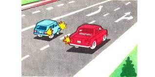
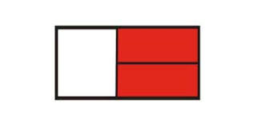
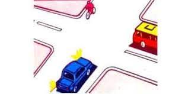
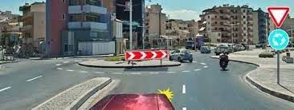
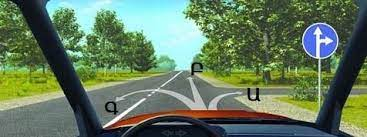
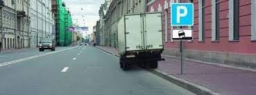
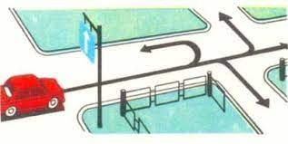
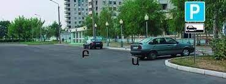
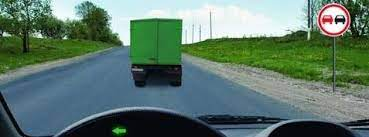
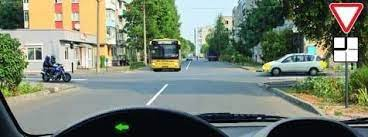

Թեստ 31
30:00
1. «Ճանապարհային երթևեկության անվտանգության ապահովման մասին» ՀՀ օրենքի համաձայն` կարգավորող է համարվում`
2. "Ճանապարհային երթևեկության անվտանգության ապահովման մասին" ՀՀ օրենքի համաձայն՝ D կարգի և D1 ենթակարգի տրանսպորտային միջոցներ վարելու իրավունքի վկայական կարող է տրվել՝
3. Տրանսպորտային միջոցների շահագործումն արգելվում է, եթե`
4. Տրանսպորտային միջոցների շահագործումն արգելվում է, եթե`
5. Երթևեկության առավելություն ունի`

6. Այսպիսի ճանաչման նշանով են կահավորվում այն տրանսպորտային միջոցները, որոնք`

7. Ո՞ր պատասխանում է ճիշտ նշված խաչմերուկի անցման հերթականությունը:

8. Եթե կարգավորողի աջ ձեռքը պարզված է առաջ, ապա ոչ ռելսագնաց տրանսպորտային միջոցների երթևեկությունը թույլատրվում է`
9. Մուտք գործել խաչմերուկ նշված գոտուց

10. Երթևեկությունը թույլատրվում է

11. Խախտել է արդյո՞ք բեռնատարի վարորդը կայանման կանոնները

12. Ո՞ր ճանապարհային նշանները չեն գործում, երբ դրանց պահանջները հակասում է լուսացույցի ազդանշանների նշանակությանը:
13. Ի՞նչ է ցույց տալիս հորիզոնական գծանշման դեղին հոծ գիծը:
14. Ո՞ր ուղղությամբ է թույլատրվում երթևեկությունը:

15. Օրվա մութ ժամանակ ճանապարհի չլուսավորված հատվածներում սահմանված երթուղով երթևեկող ավտոբուսի վրա պետք է միացված լինի՝
16. Կարգավորողն ազդանշան տալիս է սուլիչով`
17. Ո՞ր վարորդն է խախտել կայանման կանոնները

18. Թույլատրվո՞ւմ է այս իրավիճակում վազանց կատարել

19. Ձախ շրջադարձ կատարելիս պետք է ճանապարհը զիջեք
